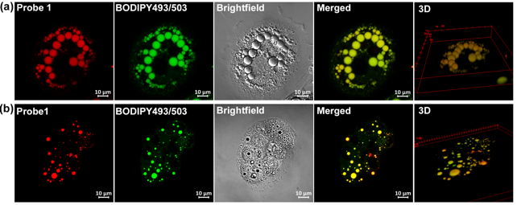

Turn-on detection of AEP activity
A smart probe reports subcellular asparaginyl endopeptidase activity in living cells.
Organic & Biomolecular Chemistry
Read paper ↗We design chemical probes and peptoid transporters to read enzyme activity, visualize cellular environments, and improve intracellular cargo delivery.

We connect molecular design with measurements in living systems—asking how a molecule’s structure controls what it detects, where it goes, and how it interacts with cells.
Protease function depends on when and where an enzyme is active. We develop activity-based probes that combine molecular recognition, reactive groups, and fluorescent reporters to investigate active proteases in living cells. Our work spans asparaginyl endopeptidase (AEP) and the HTRA family, with an emphasis on probe reactivity, subtype preference, and subcellular access.
A smart probe reports subcellular asparaginyl endopeptidase activity in living cells.
Live-cell activity measurements include HTRA1 in an AD-like cellular model and mitochondria-targeted labeling of HTRA2.
Probe design is refined to improve reactivity and preferences among HTRA subtypes.
Fluorogenic molecules translate local chemistry and physical environments into optical signals. We design probes for biological thiols and lipid droplets, and study how molecular structure controls fluorescence responses. These tools support imaging from living cells to tissues; related molecular-rotor chemistry also enables latent-fingerprint visualization.

A turn-on fluorescent probe enables live-cell imaging of biothiols.
Sensitivity to hydrophobic and viscous environments extends fluorogenic design to forensic imaging.
Dioxaborine barbiturate probes visualize lipid droplets in cells and fruit-fly tissues.
Cellular entry, subcellular localization, and toxicity respond differently to molecular design. We investigate amphipathic peptoids with tunable side chains, charge, and conformation to understand these relationships. From mitochondria-targeting sequences to protein- and nanoparticle-delivery systems, our goal is to balance useful cellular accumulation with compatibility in biological settings.
Sequence design extends peptoid transporters to macromolecular cargos: biotinylated analogues promote streptavidin accumulation, while peptoid-functionalized PLGA nanoparticles show enhanced cellular uptake and accumulation in 3D tumor spheroids.
Amphipathic peptoid sequences combine cellular uptake with mitochondrial localization.
Structure–activity studies distinguish determinants of cellular entry and mitochondrial localization.
A review connects sequence properties with cargo, biological context, and therapeutic requirements.
A turn-on probe reveals subcellular AEP activity in living cells.
AEP probes ↗Peptoid targeting and HTRA-probe studies connect chemical structure with cellular behavior.
Peptoid design ↗Fluorogenic lipid-droplet probes extend imaging to cells and tissues.
Lipid-droplet imaging ↗Peptoid transporters are evaluated with proteins, nanoparticles, and 3D spheroid models.
Cargo delivery ↗We welcome discussions on activity-based probes, fluorogenic imaging, and molecular transporters, as well as applications that bring these approaches together.